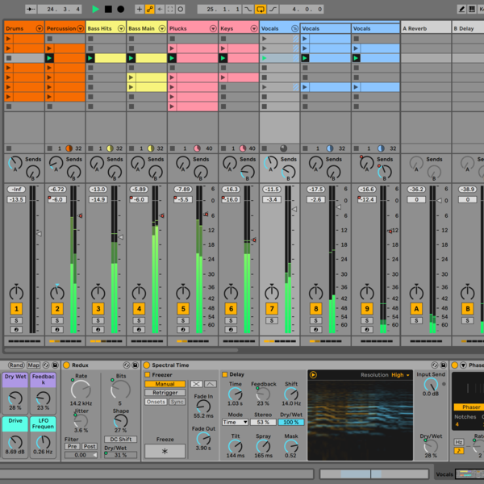

My Favorite DAW and Relative Comparisons

Written by: Austin Wilson
Published: 06/03/2021
My favorite DAW (Digital Audio Workstation) is Ableton Live. I have over 8 years of experience within the software and despite my obvious bias I have become familiar with many other DAW’s over my many years of audio production. My close second to Ableton is Reaper due to it’s customizability, industry standard workflow, and low cost and accessibility. Although Ableton has some better midi editing and stock plugins (of which Reaper’s are still quite competitive) Reaper’s similarities to the long standing industry standard Pro Tools mean it is incredibly powerful, while avoiding some of the more dated practices of Pro Tools. I hate Pro Tools, as it feels like an outdated Reaper, for about 10 - 15 times the money depending on the version you aquire. Pro Tools tries to appeal to people who learned audio production on hardware and therefore makes some very odd workflow decisions that Ableton and Reaper do not share as they more fully utilize the platform of modern computing and software language. I also avoid recommending Audacity, because while simple, it’s workflow differs greatly from all other daws, meaning your knowledge stays very one dimensional while learning and isn’t nearly as powerful or useful as other easily acquirable and operable DAW’s such as Reaper.